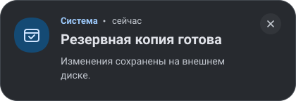

<!doctype html>
<html lang="ru">
<meta charset="utf-8">
<meta name="viewport" content="width=device-width, initial-scale=1">
<title>MY Notification · Предпросмотр</title>
<style>
  :root {
    color-scheme: dark light;
    --base: #101418;
    --surface: #181c21;
    --outline: #42474e;
    --ink: #e0e2e8;
    --muted: #c2c7cf;
    --primary: #9dcafc;
    --on-primary: #003355;
  }
  @media (prefers-color-scheme: light) {
    :root {
      color-scheme: light;
      --base: #f8f9ff;
      --surface: #eef1f7;
      --outline: #c2c7cf;
      --ink: #181c20;
      --muted: #42474e;
      --primary: #32628d;
      --on-primary: #fff;
    }
  }
  * { box-sizing: border-box; }
  body {
    min-height: 100svh;
    margin: 0;
    display: grid;
    align-items: center;
    background: var(--base);
    color: var(--ink);
    font: 15px/1.5 "Google Sans", Roboto, system-ui, sans-serif;
  }
  main { inline-size: min(100% - 32px, 720px); margin: 40px auto; }
  h1 {
    margin: 0 0 18px;
    font-weight: 600;
    font-size: clamp(26px, 6vw, 40px);
    letter-spacing: -.035em;
  }
  .stage {
    position: relative;
    overflow: hidden;
    background: var(--surface);
    min-height: clamp(146px, 40vw, 280px);
    border: 1px solid var(--outline);
    border-radius: 30px;
  }
  .card {
    position: absolute;
    inset: 22px 22px auto auto;
    width: min(420px, 100% - 44px);
    border-radius: 24px;
    filter: drop-shadow(0 10px 12px #0004);
  }
  .card img { width: 100%; height: auto; display: block; }
  .close {
    position: absolute;
    top: 0;
    right: 3.3%;
    width: 10.5%;
    height: 47%;
    border: 0;
    border-radius: 999px;
    background: transparent;
  }
  .controls { display: flex; flex-wrap: wrap; gap: 12px 20px; align-items: center; margin-top: 18px; }
  button, select { cursor: pointer; font: inherit; }
  :is(button, select, input):focus-visible { outline: 2px solid var(--primary); outline-offset: 3px; }
  select, #source-button {
    min-height: 44px;
    padding: 8px 14px;
    border: 1px solid var(--outline);
    border-radius: 16px;
    background: var(--surface);
    color: var(--ink);
  }
  #source-button:hover { border-color: var(--primary); }
  #download { color: var(--primary); }
  #show {
    padding: 10px 19px;
    min-height: 44px;
    border-radius: 999px;
    border: 0;
    background: var(--primary);
    color: var(--on-primary);
    font-weight: 650;
  }
  #show:hover { filter: brightness(.9); }
  label { color: var(--muted); display: inline-flex; gap: 8px; align-items: center; cursor: pointer; }
  input { accent-color: var(--primary); width: 18px; height: 18px; margin: 0; }
  #status { color: var(--muted); min-height: 1.5em; margin-bottom: 0; }
</style>
<main>
  <h1>Уведомление Material You</h1>
  <div class="stage" aria-label="Предпросмотр">
    <div class="card" id="card">
      
      <button class="close" id="close" type="button" aria-label="Закрыть уведомление"></button>
    </div>
  </div>
  <div class="controls">
    <label for="variant">Звук
      <select id="variant">
        <optgroup label="Колыбельная">
          <option value="lullaby-dawn" data-source="kalimba">Рассвет</option>
          <option value="lullaby-sway" data-source="kalimba">Качание</option>
          <option value="lullaby-glow" data-source="kalimba-g4">Огонёк</option>
          <option value="lullaby" data-source="kalimba">Прежняя версия</option>
        </optgroup>
        <optgroup label="Другие сигналы">
          <option value="kalimba">Калимба</option>
          <option value="piano">Пианино</option>
          <option value="nylon">Нейлоновая струна</option>
        </optgroup>
        <optgroup label="Предыдущие варианты">
          <option value="wood">Дерево</option>
          <option value="paper">Бумага</option>
          <option value="drop">Капля</option>
        </optgroup>
      </select>
    </label>
    <button id="show" type="button">Показать уведомление</button>
    <button id="source-button" type="button">Послушать исходник</button>
  </div>
  <div class="controls">
    <label><input id="sound" type="checkbox" checked> Со звуком</label>
    <a id="download" href="../audio/lullaby-dawn.wav" download>Скачать WAV</a>
  </div>
  <p id="status" role="status"></p>
  <audio id="cue" src="../audio/lullaby-dawn.wav" preload="auto"></audio>
  <audio id="source" src="../audio/source/kalimba.mp3" preload="none"></audio>
</main>
<script>
  const card = document.querySelector("#card");
  const show = document.querySelector("#show");
  const close = document.querySelector("#close");
  const cue = document.querySelector("#cue");
  const source = document.querySelector("#source");
  const sourceButton = document.querySelector("#source-button");
  const variant = document.querySelector("#variant");
  const download = document.querySelector("#download");
  const sound = document.querySelector("#sound");
  const status = document.querySelector("#status");
  const reducedMotion = matchMedia("(prefers-reduced-motion: reduce)");

  // The originals have different recording levels. Attenuate playback only.
  source.volume = 0.5;
  let animations = [];
  let closeTimer;

  // Step response of a unit-mass spring at rest, sampled for Web Animations.
  const spatial = t => {
    const frequency = Math.sqrt(800);
    const damping = 0.6;
    const damped = frequency * Math.sqrt(1 - damping ** 2);
    return 1 - Math.exp(-damping * frequency * t) *
      (Math.cos(damped * t) + damping * frequency / damped * Math.sin(damped * t));
  };
  const effects = t => {
    const progress = Math.sqrt(3800) * t;
    return 1 - (1 + progress) * Math.exp(-progress);
  };

  function springFrames(duration, response, frame) {
    const steps = Math.ceil(duration / 8);
    return Array.from({ length: steps + 1 }, (_, index) =>
      frame(index === steps ? 1 : response(index * duration / steps / 1000)));
  }

  function resetAnimation() {
    clearTimeout(closeTimer);
    animations.forEach(animation => animation.cancel());
    animations = [];
  }

  function dismiss() {
    const { transform, opacity } = getComputedStyle(card);
    resetAnimation();
    if (card.hidden) return;
    if (document.activeElement === close) show.focus();
    if (reducedMotion.matches) {
      card.hidden = true;
      return;
    }
    const exit = card.animate(
      [{ transform, opacity }, { transform: "translateX(16px)", opacity: 0 }],
      { duration: 180, easing: "cubic-bezier(.3, 0, .8, .15)", fill: "forwards" }
    );
    animations = [exit];
    exit.onfinish = () => {
      card.hidden = true;
      resetAnimation();
    };
  }

  function playClip(clip) {
    clip.currentTime = 0;
    clip.play().catch(error => {
      if (error.name !== "AbortError") status.textContent = "Браузер не смог воспроизвести звук.";
    });
  }

  function selectSound() {
    status.textContent = "";
    source.pause();
    cue.src = download.href = `../audio/${variant.value}.wav`;
    const original = variant.selectedOptions[0].dataset.source ?? variant.value;
    source.src = `../audio/source/${original}.mp3`;
  }

  variant.addEventListener("change", selectSound);
  sourceButton.addEventListener("click", () => {
    status.textContent = "";
    if (!source.paused) {
      source.pause();
      return;
    }
    cue.pause();
    playClip(source);
  });
  source.addEventListener("play", () => {
    sourceButton.textContent = "Остановить исходник";
  });
  source.addEventListener("pause", () => {
    sourceButton.textContent = "Послушать исходник";
  });

  show.addEventListener("click", () => {
    resetAnimation();
    status.textContent = "";
    card.hidden = false;
    if (!reducedMotion.matches) {
      animations = [
        card.animate(springFrames(320, spatial, p => ({
          transform: `translateX(${(1 - p) * 24}px)`,
        })), 320),
        card.animate(springFrames(120, effects, p => ({ opacity: p })), 120),
      ];
    }
    source.pause();
    if (sound.checked) playClip(cue);
    closeTimer = setTimeout(dismiss, 7000);
  });
  close.addEventListener("click", dismiss);
  sound.addEventListener("change", () => {
    if (!sound.checked) cue.pause();
  });
  if (variant.value !== "lullaby-dawn") selectSound();
</script>
</html>
